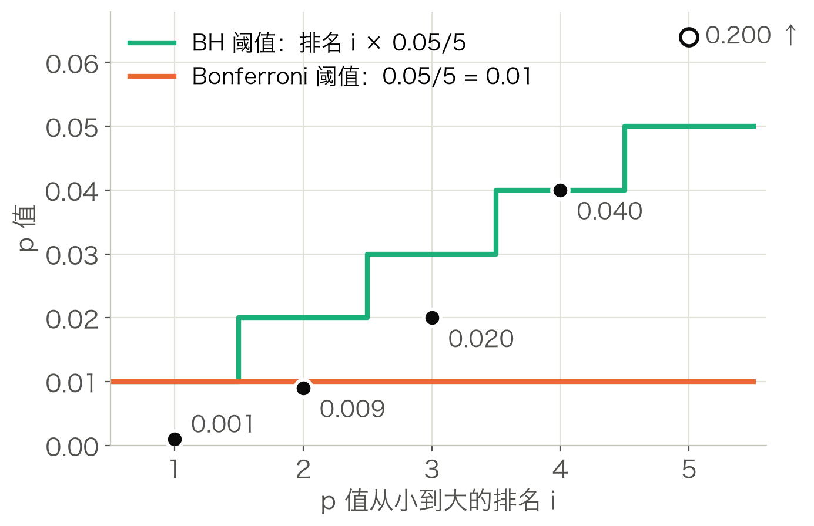
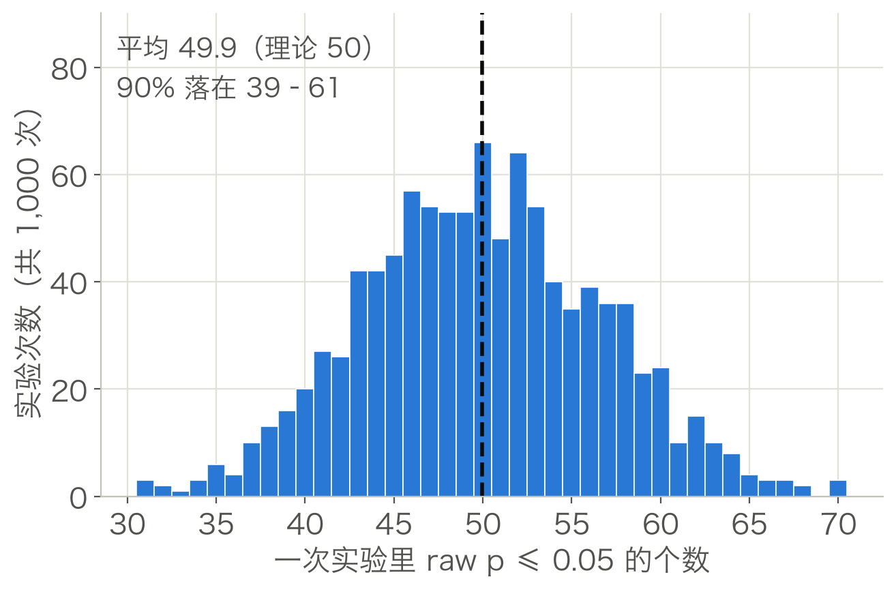
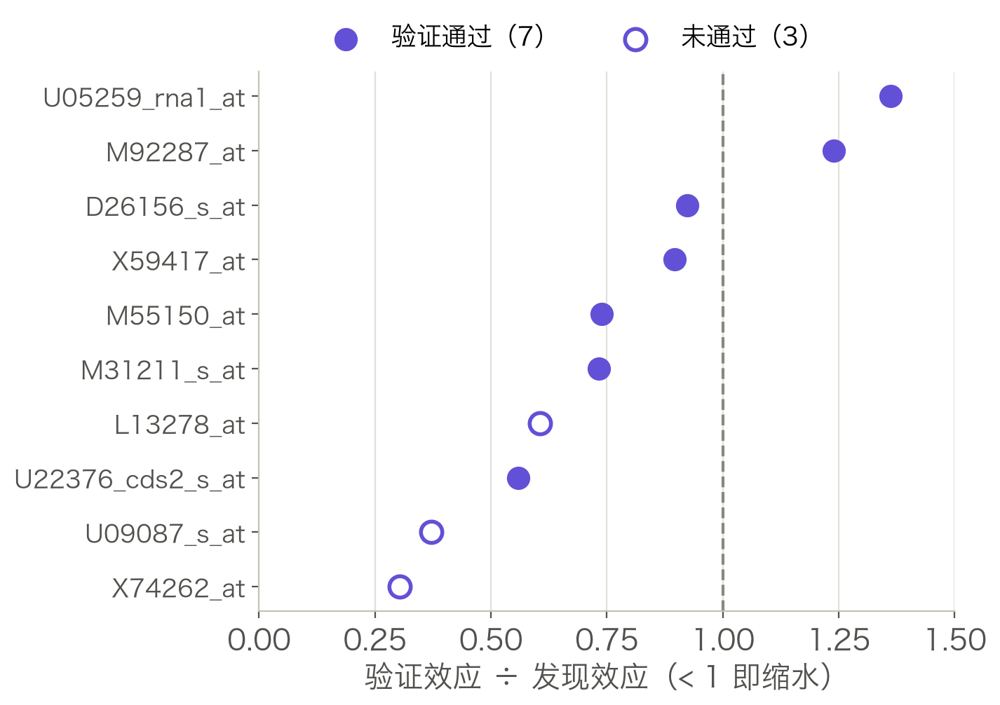
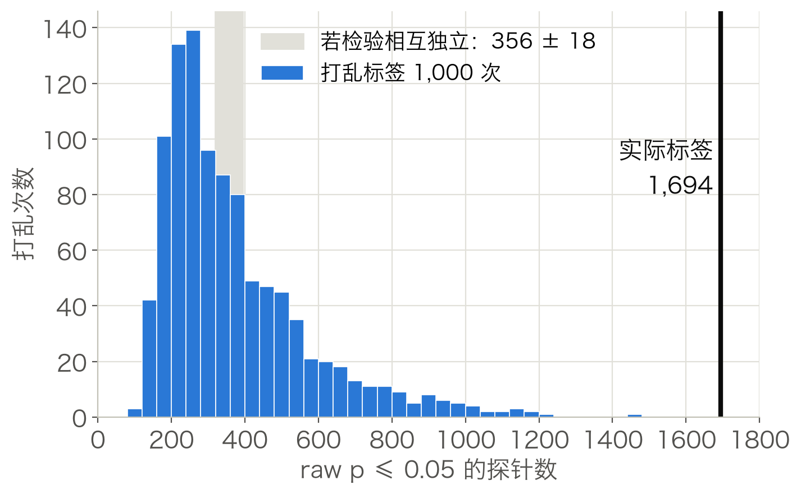
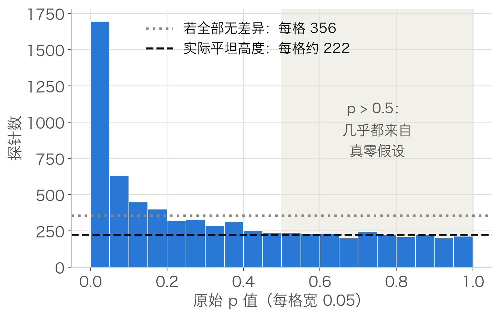
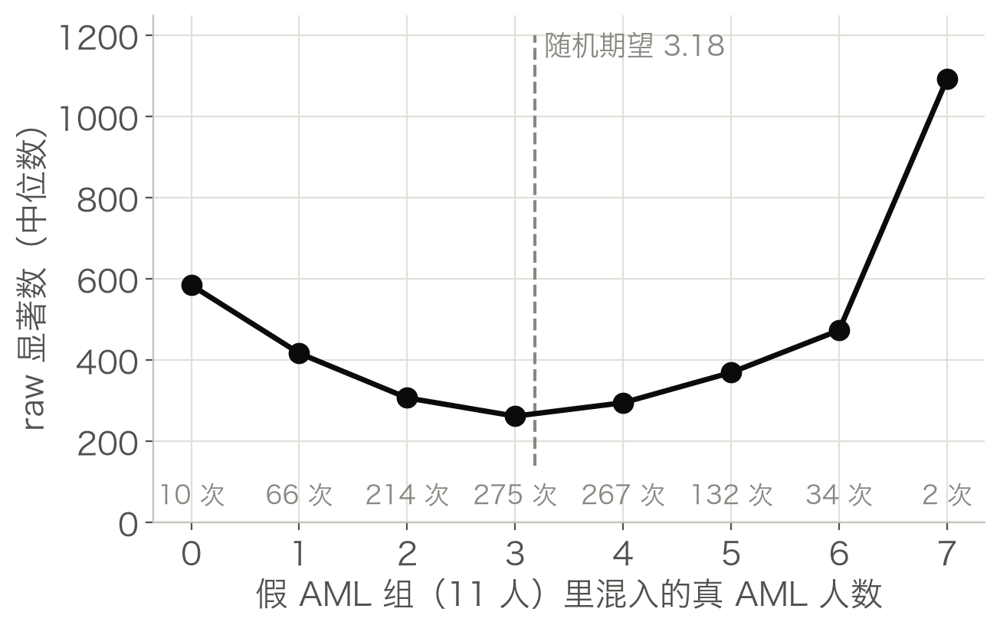

数据：Golub 白血病芯片，7,129 个探针
train：ALL 27 / AML 11（用来发现） · test：ALL 20 / AML 14（锁定候选后才打开）
定义 → 模拟 → 真实数据 → 两个进阶 → 回答
| 概念 | 是什么 | 不是什么 |
|---|---|---|
| p 值 | 假设"没差异"成立时，看到至少这么极端结果的概率 | 不是"没差异"为真的概率 |
| 家族 m | 实际做过的全部检验，本例 m = 7,129 | 不是最后报告的那几个 |
| FWER（Bonferroni） | 至少出现 1 个假发现的概率；阈值改为 α / m | 不是"每个检验各错 5%" |
| FDR（BH） | 发现里假发现所占比例的长期平均 | 不保证这一批里每个都是真的 |
| adjusted p | 在给定家族和方法下，刚好能被拒绝的整体阈值 | 不是探针自身的属性：换家族就变 |
5 个教学用 p 值（m = 5，α = 0.05），不是真实探针

1,000 个变量都没有差异，每次按 p ≤ 0.05 判断，重复 1,000 次

1,000 个变量中 100 个真有差异（δ = 1.0），1,000 次重复的平均
| 原始 p | Bonferroni | BH | |
|---|---|---|---|
| 检出力（真信号被找到的比例） | 0.78 | 0.06 | 0.29 |
| FDR（发现里假的比例，平均） | 0.36 | 0.007 | 0.046 |
| FWER（至少错 1 个的概率） | 1.00 | 0.044 | 0.754 |
BH 的 FWER 是 0.754，FDR 却是 0.046，并不矛盾：平均 30 个发现里约 1.4 个是假的
不是：10 个候选方向全部一致，但 8 个效应变小（中位数只剩 0.74）

把 train 的 ALL/AML 标签打乱 1,000 次：标签与表达无关，但探针间的相关性原样保留

真零假设的 p 值均匀分布：右侧"平坦部分"的高度，就是真零假设的比例 π0

| U22376_cds2_s_at | 值 |
|---|---|
| raw p | 8.39 × 10⁻⁹ |
| 完整家族（m = 7,129）校正后 | 5.98 × 10⁻⁵ |
| 先挑前 20 个、只在 20 个里校正 | 1.68 × 10⁻⁷ 小了 356 倍 |
只有 11 个 AML：打乱后的"假分组"可能仍与真分组相关，真信号漏了进来

| 至少 1 个发现的比例 | Bonf. | BH |
|---|---|---|
| 全部 1,000 次 | 7.5% | 8.2% |
| 混入 2–4 个（756 次） | 6.1% | 6.3% |
| 混入 0–1 或 5–7 个（244 次） | 11.9% | 13.9% |